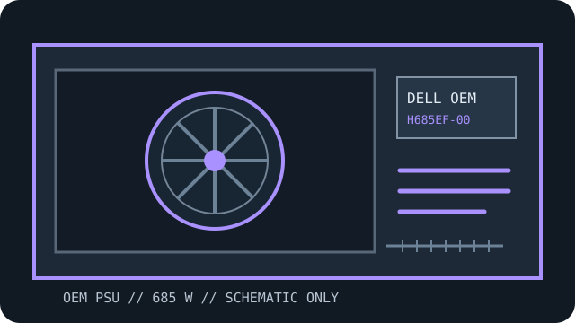

[ LEGACY AND PROPRIETARY OEM SUPPLIES // IDENTIFIED UNIT ]
Precision T3610 685 W power supply
Exact platform-and-assembly record for Dell H685EF-00 used in the Dell Precision T3610 Tower workstation. Confirm the entire label, spare/FRU number and revision: similar host names can ship with electrically different supplies.

SAFETY: Never open a PSU or probe its interior. Hazardous voltage can remain after unplugging. Disconnect mains before service and replace the complete unit unless service is performed by a qualified technician.
Recorded model specifications
| Exact model / FRU | Dell assembly identifier H685EF-00; verify all suffixes, spare number, revision and nameplate on the unit. |
|---|---|
| Host-system compatibility | Dell Precision T3610 Tower workstation only when the system-board revision, machine type, chassis form and documented service configuration match. This is not a generic replacement PSU. |
| Form and rated output | OEM proprietary internal supply; rated total output class: 685 W. Per-rail/combined limits and continuous-load derating must be checked on the exact PSU label/service documentation. |
| AC input | 100–240 V AC, up to 9.7 A, 50/60 Hz; actual range/current must match the unit label. |
| DC output rails | +12 V outputs (+12VA through +12VE), −12 V and +12 V standby as listed for this hot-plug assembly; rated total output: 685 W. Confirm each rail current and combined limit from the exact label. |
| Connectors / pinout warning | Dell workstation system-board / CPU / GPU harness set; pinout and cable family are not ATX or interchangeable with other Dell modules by appearance. A physically fitting plug does not prove electrical compatibility; never reuse unrelated modular cables or rely on an unverified adapter. |
| Mechanical envelope | Approx. 160 × 63 × 225 mm (width × height × depth); check the T3610 chassis rails and airflow path. Use the platform manual to check tabs, screws, airflow direction, fan clearance and cable reach; do not force-fit. |
| Electrical/revision caveat | The PSU rating label controls rail-current, combined-power, standby, protection and input details for the exact unit. A host service manual establishes supported platform replacement; it does not make the assembly an ATX standard supply. |
Service and compatibility notes
- Use only the documented Dell Precision T3610 Tower workstation replacement assembly or a manufacturer-authorized superseding part number verified against the actual machine type.
- Confirm keyed motherboard/CPU/GPU connectors and pin assignments from the Dell service manual before replacement. Do not assume ATX, EPS or PCIe pinouts from connector shape.
- Dimensions are nominal identification guidance. Confirm the exact part's labels, mounting geometry, vents and harness orientation before purchase or installation.
- Follow the OEM manual's shutdown, mains-disconnect and chassis service steps. Never open or electrically probe the PSU.
Sources & further reading
- Dell Precision T3610 service manual — PSU service procedureOfficial Dell service/manual source for the named host platform. Use the exact machine type and assembly suffix when checking fit, replacement procedure and revisions.
- Dell Precision T3610 manuals and technical documentsOfficial Dell service/manual source for the named host platform. Use the exact machine type and assembly suffix when checking fit, replacement procedure and revisions.
Manufacturer documentation is authoritative for platform-level service and supported assemblies. Confirm electrical input/output data and dimensions against the individual unit’s nameplate and the manual revision matching its exact SKU.